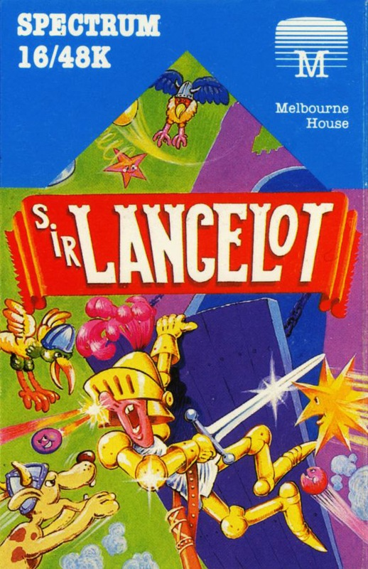
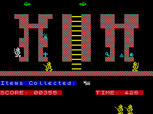
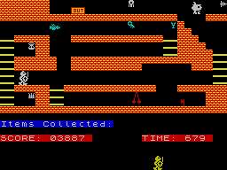

Sir Lancelot


{kind=link}

| Publisher: | Melbourne House |
| Price: | £5.95 |
| Year: | 1984 |
| Source: | CRASH, Issue 11 |

Here’s the first game from Melbourne House’s new ‘Studio B’ based in England. Your task in this manic platform-ish game is to investigate 24 rooms in the castle and to collect all the things of use to you as you go. This is obviously the kind of useless existence that King Arthur’s knights of the Round Table enjoyed, seeking, collecting and getting killed off.

the alcoves
Although principally a platform style game, Sir Lancelot has many variations on the different screens, ladders, stairs, towers, hidey-holes and all sorts of things. Because of the combination and placing of collectible objects and hazards, strategy becomes an important element in the game. Even when all the objects have been collected, you cannot clear a screen until you reach the flashing exit which appears when the last object is taken. There is a large playing area, with score lines and animated ‘lives’ remaining running along beneath.
CRITICISM
‘After watching someone else play this game I was determined to do better than that person — that just goes to show the competitiveness of this game. Sir Lancelot is a well animated knight that has some amazing powers of jumping and running around the screen. Collecting the jewels can be an easy task or a difficult task depending on the screen layout and on the moving hazards, but as a general rule it gets progressively more difficult and more thought needs to be put in to each screen and reactions need to get sharper. Colours have been used very well to give various shades, all very pleasing to the eye and very clear. Graphics are of a nice size and are also very detailed. One thing I especially like are your spare lives hanging about at the bottom of the screen waiting to be used, pacing impatiently from side to side in boredom. I found Sir Lancelot incredibly addictive, and just the sheer fact of wanting to see the next screen made me play the game even more. I can well recommend this game to anyone.’

deceptively simple
‘This is the best 16K game I have seen in a long time. It has all the graphics and playability of Manic Miner and four more screens as well! The knight you play moves around well and very fast, as do the other characters. You have to time jumps and work out a routine through each screen. I have one main criticism, and that is that you are given a very short time to finish the screen, but apart from that I enjoyed playing Sir Lancelot very much.’
‘Sir Lancelot is rather a surprise from Melbourne House who seem to have been more interested in ‘state of the art’ games in a way, for this isn’t really that at all. What it is is a very fast, cleverly tortuous Manic Miner style game with neat, smooth, detailed graphics and some interesting variations on the theme of avoiding nasties. There’s plenty here to play with 24 screens, each more a test than the last, and like MM, once you get good with the rhythm of a screen, you can show off to your friends. Very addictive very playable, very good.’
COMMENTS
| Control keys: | Alternate keys on second row for left and right and SHIFT to SPACE for jump |
| Joystick: | Cursor type, but hardly needs one |
| Keyboard play: | Very responsive, nice simple keys |
| Use of colour: | Excellent |
| Graphics: | Excellent |
| Sound: | Very good |
| Skill levels: | 1 |
| Lives: | 4 |
| Screens: | 24 |
| General rating: | An addictive playable game, good to excellent value. |
| Use of computer: | 90% |
| Graphics: | 89% |
| Playability: | 88% |
| Getting started: | 93% |
| Addictive qualities: | 89% |
| Value for money: | 90% |
| Overall: | 90% |